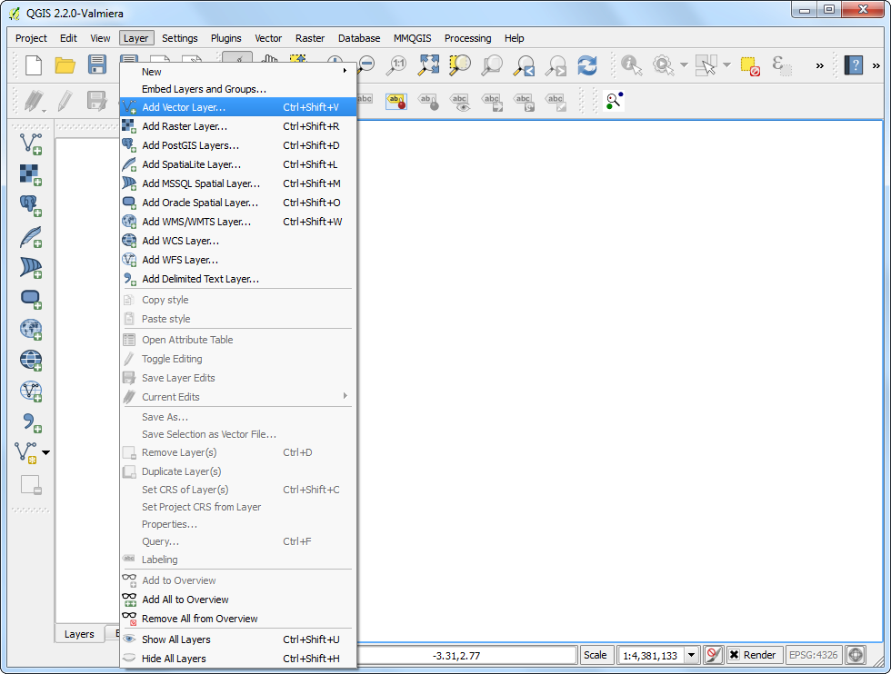

Fișierele Open BIL, BIP sau BSQ în QGIS
[ Download PDF
A4
Letter ]
Atunci când vă ocupați cu teledetecția și cu seturile de date științifice, veniți de multe ori în contact cu date în formate ca BIL, BIP or BSQ. Biblioteca GDAL - care este folosită de către QGIS pentru a citi fișierele raster - are suport pentru aceste formate, dar ea nu poate deschide singură aceste fișiere. Vom trece prin procesul de creare a fișierelor suport, astfel încât aceste formate să poată fi citite de către QGIS.
Benzile intercalate după linii (BIL), benzile intercalate după pixeli (BIP), și benzile secvențiale (BSQ) reprezintă metode comune de organizare a imaginilor multibandă. (Citiți mai multe despre aceste formate)
De obicei, aceste fișiere sunt însoțite de un fișier .hdr. În cazul în care setul dvs. de date a venit cu un fișier .hdr, asigurați-vă că numele fișierelor cu extensiile .bil, .bsq, .bip sau .hdf se potrivesc și se află în același director. De exemplu, dacă fișierul se numește image.bil, fișierul asociat ar trebui să se numească image.hdr și să se afle în același director, alături de fișierul image.bil. În acest mod, atunci când veți merge la și veți selecta fișierul image.bil, acesta se va deschide fără probleme.
De multe ori, fișierele nu vin cu un .hdr asociat. În astfel de cazuri, trebuie să creați manual acest fișier, așa cum se arată în acest tutorial.
Procedura
Dezarhivați și extrageți fișierul .bsq. În Windows, puteți utiliza excelentul utilitar 7-Zip pentru a citi și a extrage fișierul .gz. Veți vedea că aveți numai un fișier .bsq numit gl-latlong-1deg-landcover.bsq. Nu există nici un fișier hdr.

Rețineți că, dacă încercați să deschideți în QGIS fișierul gl-Lat Long-1deg-landcover.bsq, așa cum vine, veți primi un mesaj de eroare.

Pentru a depăși această eroare, vom crea un fișier antet cu extensia .hdr. Fișierul antet conține informații cu privire la setul de date și la modul în care este organizat. De obicei, această informație este furnizată ca parte a metadatelor setului de date. Dacă nu aveți metadatele, uitați-vă prin site sau prin documentația pentru indicii. Unele dintre informații pot fi ghicite, dacă nu le știți. În cazul acestui set de date, pagina de descărcare a datelor face trimitere către metadate. Descărcați metadatele și deschideți-le.

Fișierul .hdr trebuie să fie un fișier text simplu, în următorul format. Unii din acești parametri ne sunt dați, iar alții trebuie să fie elaborați. Aflați mai multe despre format.
ncols <number of columns or width of the raster>
nrows <number of rows or height of the raster>
cellsize <pixel size or resolution>
xllcorner <X coordinate of lower-left corner of the raster>
yllcorner <Y coordinate of the lower-left corner of the raster>
nodata_value <pixel value to be ignored>
nbits <number of bits per pixel>
pixeltype <type of values stored in a pixel, typically float or integer>
byteorder <byte order in which image pixel values are stored, msb or lsb>
Deschideți un editor de text și creați un fișier, în formatul specificat în pasul anterior. Salvați fișierul ca gl-latlong-1deg-landcover.hdr. Asigurați-vă că fișierul nu are .txt la sfârșit. Unele dintre valorile din fișierele text sunt ușor de înțeles. ncols și nrows provin din metadate ca Numărul de Linii și Numărul de Pixeli per Linie. cellsize este 1 ca și Rezoluția pixelului din metadate. Coordonatele X,Y ale colțului din stânga-jos trebuie să fie elaborate de către noi. Deoarece fișierul acoperă întregul glob iar unitățile sunt lat/long, xllcorner și yllcorner sunt -180 și respectiv -90. Nu avem nici o informație cu privire la nodata_value, deci -9999 este o valoare sigură. Din metadate iarăși, Pixel Format este Byte, deci nbits va fi egal cu 8, iar pixeltype va fi byte_unsigned. Nu avem informații despre byteorder, așa că lăsați-l ca msbfirst. Puteți descărca fișierul HDR formatat corect de aici.

Acum, că aveți fișierul antet, puneți-l în același director cu gl-latlong-1deg-landcover.bsq. Apoi, în QGIS, mergeți la . Selectați gl-latlong-1deg-landcover.bsq ca intrare și faceți clic pe Open.

În următorul ecran, vi se poate solicita să alegeți un CRS. Având în vedere că datele sunt în Lat/Long, alegeți WGS84 EPSG:4326 ca CRS. Acum, veți vedea setul de date încărcat în QGIS.